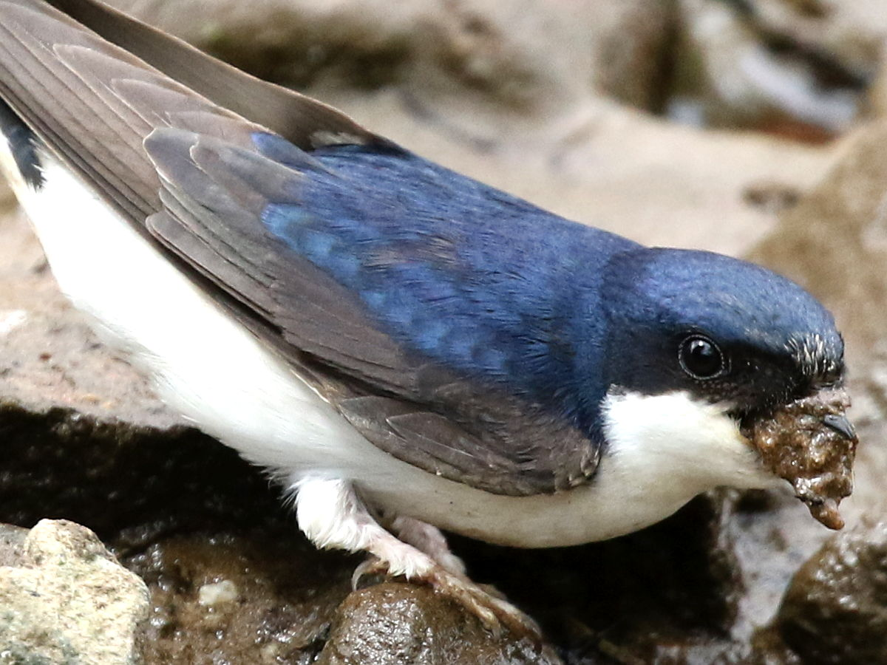
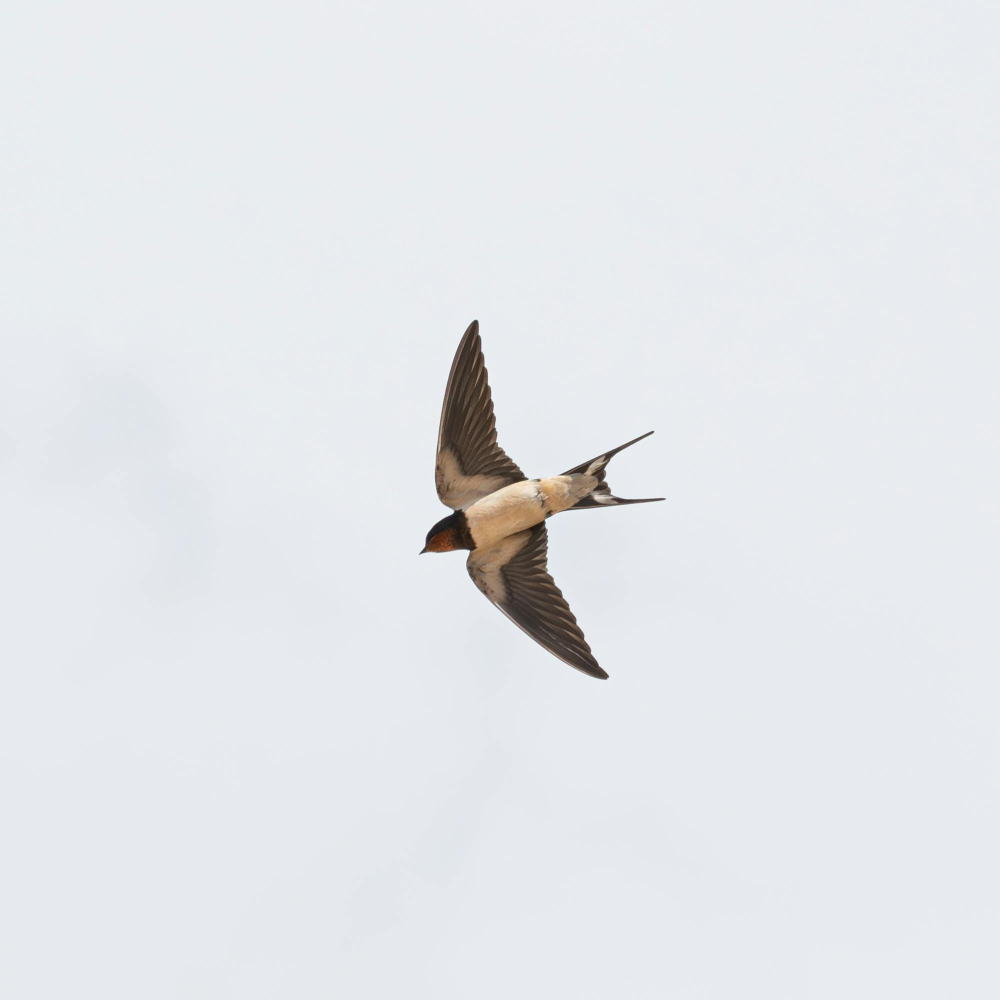
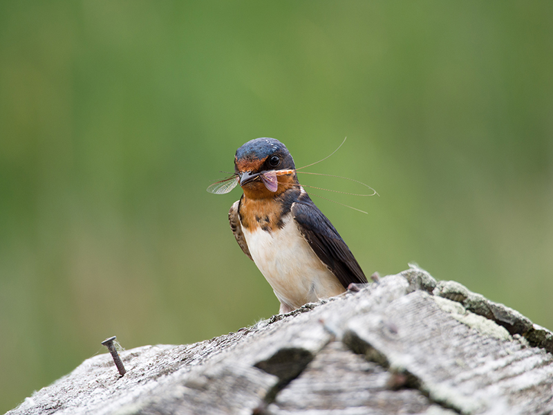
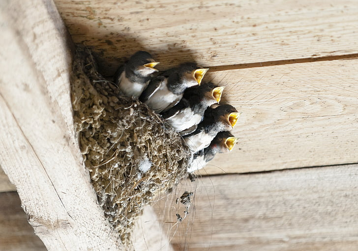

Architectes de Boue
Les hirondelles de fenetre construisent leurs nids en ajoutant de petites boules de boue, couche apres couche.
Des faits rapides a partager avec les eleves, les familles et les visiteurs du parcours.

Les hirondelles de fenetre construisent leurs nids en ajoutant de petites boules de boue, couche apres couche.

Elles parcourent de longues distances saisonnieres puis reviennent vers leurs zones de reproduction.

Elles capturent les insectes en plein vol et contribuent naturellement a l'equilibre des milieux urbains.

Ces oiseaux nichent souvent tout pres des habitations et partagent nos quartiers au quotidien.